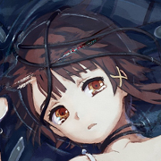

春
Newbie programmer and web designer. In free time I use to read books, and draw. You might call me an otaku. -Lurking 4chan.
これわマドスシエンヂスト~ It's so cool.

NAME: HARU
AGE: 15
RESIDENCE: INTERWEBS
OCCUPATION: NONE
STATUS: NO WAIFU
λ.haru
Post-strukturalny, post-modernizm to moje drugie imie, jedno w każdym, i każde w jednym,
do rytmu. Programowanie, budowanie, struktury post-strukturalne, roboty i wszechświaty.
Naukowe afirmacje, a priori, z poważaniem. Oskarżenia o defraudacje. One mi kwiatem.
Elementy magi, sztuki zakazane, ogląd dyskursywny. Uwielbiam Spinozę. I Pynchona.
gravity's rainbow
Kocham naturę. Czasem się nie przyznaje ale tak jest. Biologia, ekologia, życie; niesamowite.
Układ niezmiernego wszechświata, fizyka, chemia; niesamowite. To abstrakcyjny rodzaj uczuć.
君の気持ちは伝わるよ。
変化を求めず、虚無と無慈悲な深淵の世界を好む。
2013 λ.はる | Kamil Żak